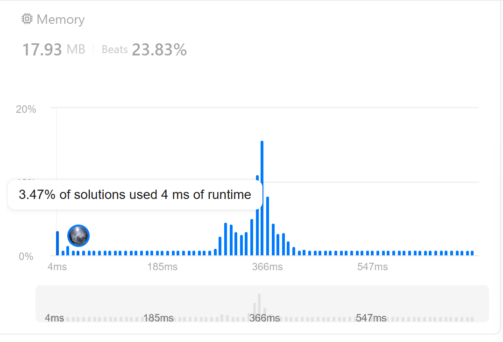
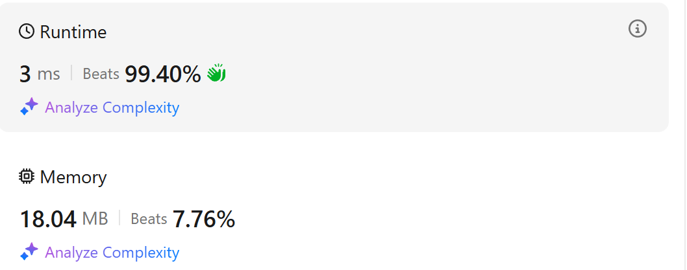

LeetCode 16: 3Sum Closest
Problem Description
Given an array nums of n integers and an integer target, find three integers in nums such that the sum is closest to target. Return the sum of the three integers.
Solution Approaches
1. Brute Force with Optimization (Solution)
The first approach implements a recursive strategy breaking down the problem into smaller subproblems:
- threeSumClosest: Finds the closest triplet sum
- twoSumClosest: Finds the closest pair sum
- oneClosest: Finds the closest single number
Time Complexity: O(n³) Space Complexity: O(1)
class Solution:
def threeSumClosest(self, nums: List[int], target: int) -> int:
assert len(nums)>=3
min_value = abs(sum(nums[:3])-target)
min_index = [0,1,2]
if len(nums)==3:
return sum(nums)
for i in range(len(nums)-2):
min_index_current, min_value_current = self.two_sum_closest(nums[i+1:], target-nums[i])
if min_value_current< min_value:
min_index = [i, min_index_current[0]+i+1, min_index_current[1]+i+1]
min_value = min_value_current
return sum([nums[j] for j in min_index])
def two_sum_closest(self, nums: List[int], target:int) -> int:
min_value = abs(sum(nums[:2])-target)
min_index = [0,1]
for i in range(len(nums)-1):
min_index_current, min_value_current = self.one_closest(nums[i+1:], target-nums[i])
if min_value_current< min_value:
min_value = min_value_current
min_index =[i,min_index_current+i+1 ]
return min_index, min_value
def one_closest(self, nums: List[int], target:int)-> int:
nums_a = [abs(x - target) for x in nums]
min_v = min(nums_a)
min_index = nums_a.index(min_v)
return min_index, min_v
Simplify it, we can have
class Solution2:
"""without y==0, 4279 ms, with y==0, 47ms"""
def threeSumClosest(self, nums: List[int], target: int) -> int:
nums.sort()
if len(nums)==3:
return sum(nums)
min_value = sum(nums[:3])
largest_value = sum(nums[-3:])
if min_value >= target:
return min_value
if largest_value <= target:
return largest_value
current_min = abs(min_value-target)
result = min_value
for i, x in enumerate(nums[:-2]):
current_sum = self.two_sum_closest(nums[i+1:], target-x) + x
y =abs(current_sum - target)
if y==0:
return current_sum
if y < current_min:
current_min = y
result = current_sum
return result
def two_sum_closest(self, nums: List[int], target:int) -> int:
if len(nums)==2:
return sum(nums)
min_value = sum(nums[:2])
largest_value = sum(nums[-2:])
if min_value >= target:
return min_value
if largest_value <= target:
return largest_value
current_min = abs(min_value-target)
result = min_value
for i, x in enumerate(nums[:-1]):
current_sum = self.one_closest(nums[i+1:], target-x) + x
y = abs(current_sum - target)
if y==0:
return current_sum
if y < current_min:
current_min = y
result = current_sum
return result
def one_closest(self, nums: List[int], target:int)-> int:
return min([(x, abs(target - x)) for x in nums], key = lambda x: x[1])[0]
For general KSumClosest
class Solution3:
def threeSumClosest(self, nums: List[int], target: int) -> int:
nums.sort()
return self.KSumClosest(nums, 3, target)
def KSumClosest(self, nums: List[int], k: int, target: int) -> int:
N = len(nums)
if N == k:
return sum(nums[:k])
# target too small
current = sum(nums[:k])
if current >= target:
return current
# target too big
current = sum(nums[-k:])
if current <= target:
return current
if k == 1:
return min([(x, abs(target - x)) for x in nums], key = lambda x: x[1])[0]
closest = sum(nums[:k])
for i, x in enumerate(nums[:-k+1]):
if i>0 and x == nums[i-1]:
continue
current = self.KSumClosest(nums[i+1:], k-1, target - x) + x
if abs(target - current) < abs(target - closest):
if current == target:
return target
else:
closest = current
return closest
The above solutions are theoretically the same. But in practice, they have different speed in leetcode submission.

The last one is very fast, but this is actually because some edge case handling like the smallest sum and largest sum of the list, also return directly when finding sum equals target. If you remove these edge case termination, it would slow down very much.
2. Optimized Two-Pointer Approach (Solution2)
This solution uses sorting and two-pointer technique: 1. Sort the array first 2. Fix one number and use two pointers for the remaining array 3. Move pointers based on sum comparison with target
Time Complexity: O(n²) Space Complexity: O(1) (excluding sort space)
class Solution4:
def threeSumClosest(self, nums: List[int], target: int) -> int:
assert len(nums)>=3
nums.sort()
if len(nums)==3:
return sum(nums)
min_value = sum(nums[:3])
largest_value = sum(nums[-3:])
if min_value >= target:
return min_value
if largest_value <= target:
return largest_value
result = sum(nums[:3])
min_value = abs(result-target)
if len(nums)==3:
return sum(nums)
for i in range(len(nums)-2):
current_sum = self.two_sum_closest(nums[i+1:], target-nums[i])
if abs(current_sum+nums[i]-target) < min_value:
result = current_sum + nums[i]
min_value = abs(result-target)
if result==target:
return result
return result
def two_sum_closest(self, nums: List[int], target:int) -> int:
# use pointers
if len(nums)==2:
return sum(nums)
min_value = sum(nums[:2])
largest_value = sum(nums[-2:])
if min_value >= target:
return min_value
if largest_value <= target:
return largest_value
result = sum(nums[:2])
left, right = 0, len(nums)-1
while left < right:
sum_2 = nums[left]+nums[right]
if abs(sum_2-target) < abs(result-target):
result = sum_2
if sum_2<target:
left+=1
elif sum_2>target:
right-=1
else:
return result
return result
 Using the termination condition check, we could speed up the code very much.
Understanding the Two-Pointer Approach in two_sum_closest
The two_sum_closest function uses a two-pointer technique to find two numbers in a sorted array that sum up closest to the target. Let's break down how it works:
Two-Pointer Logic:
left, right = 0, len(nums)-1 # Start from both ends
while left < right:
sum_2 = nums[left]+nums[right]
if abs(sum_2-target) < abs(result-target): # Found closer sum
result = sum_2
Pointer Movement:
- If sum is too small (sum_2 < target): Move left pointer right to increase sum
- If sum is too large (sum_2 > target): Move right pointer left to decrease sum
- If exact match found (sum_2 == target): Return immediately
This approach works because: - The array is sorted, so moving pointers left/right predictably changes the sum - We can eliminate many combinations by moving pointers intelligently - Early termination conditions significantly improve performance
Time Complexity: O(n) where n is the length of nums Space Complexity: O(1) as we only use two pointers
Related LeetCode Problems
Here are some closely related problems that use similar techniques:
-
Find all unique triplets that sum to zero
- Uses same two-pointer technique
- Similar time complexity O(n²)
-
Key difference: Finds exact sum of zero vs. closest sum to target
-
Extension to finding quadruplets that sum to target
- Can be solved using similar approach with one more loop
- Time complexity O(n³)
-
Shows how k-sum problems can be generalized
-
259. 3Sum Smaller (Premium)
-
Count triplets with sum less than target
- Uses similar sorting + two-pointer approach
-
Shows how to modify the algorithm for different conditions
-
Simpler version using just two pointers
- Good starting point for understanding the technique
- Direct application of the two-pointer method used in 3Sum Closest
These problems form a family of "k-sum" problems, each with slight variations but sharing core techniques: - Sorting the input array - Using multiple pointers - Handling duplicates - Early termination optimizations
Practicing these problems together helps build a strong understanding of: - Two-pointer technique - Early termination strategies - Edge case handling - Time/space complexity trade-offs
Time Complexity Lower Bound
The 3Sum Closest problem has a lower bound of Ω(n²) in the worst case, and here's why:
- Relation to 3SUM Problem:
- 3Sum Closest is a generalization of the 3SUM problem
- 3SUM problem (finding three numbers that sum to exactly zero) has a quadratic lower bound
-
Any algorithm solving 3Sum Closest must also be able to solve 3SUM
-
Why O(n) or O(nlogn) is Impossible:
- To find the closest sum, we must consider all possible triplets
- There are O(n³) possible triplets in total
- Even with sorting and two-pointer technique, we still need to examine O(n²) pairs
-
Skipping elements can only help with constant factor optimization
-
Theoretical Proofs:
- Gajentaan and Overmars proved that 3SUM is 3SUM-hard
- Any significant improvement below O(n²) would break the 3SUM hardness conjecture
-
This would have major implications for many other computational geometry problems
-
Special Cases:
- For sorted arrays with special properties, better average-case performance is possible
- Using randomization or approximation algorithms might give better average-case complexity
- However, the worst-case bound of Ω(n²) still holds
Therefore, our focus should be on optimizing the constant factors and handling special cases efficiently, rather than trying to achieve sub-quadratic time complexity.